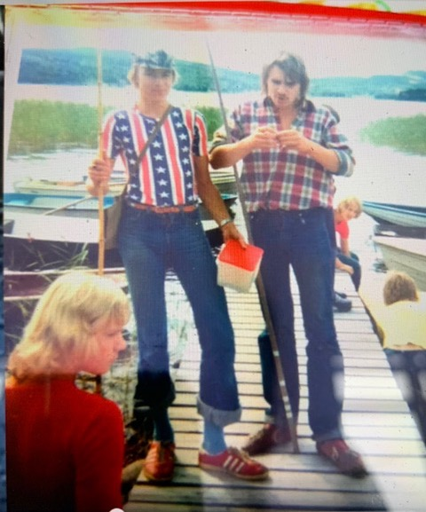
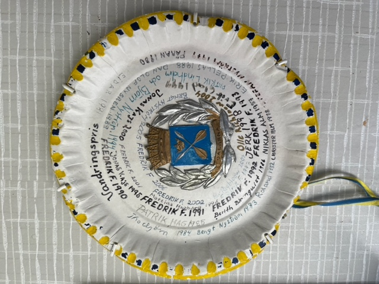

av Fredrik Fichtelius
Vår traditionsenliga fisketävling i juli startade i slutet av 60-talet, på initiativ av min far men främst kanske av Göte Nyström. De första åren startades tävlingen med att Göte sköt ett skott med hagelgevär och den avslutades med två skott för att förklara att tävlingen var över. Göte höll i det i cirka tio år innan min far (Per-Olof) tog över och drev det till början av 90 talet och sedan dess har jag hållit i tävlingen. Det var först i slutet av 80 talet som geväret försvann och ersattes av fyrverkeripjäser som numera också är borttagna.
Det har varit liknande regler, endast mete och deltagarna måste ro ut, som har gällt genom åren, med mindre justeringar. Däremot har andra inslag existerat. Bland annat hade Bengt Söderberg och Göte Nyström vid några tillfällen en bevakningsbåt som åkte runt mellan deltagarnas båtar för att se att man inte fuskade. De hade både kikare och gevär med i båten, för de var oftast på fel ställe när det var dags att sluta, så dubbelsaluten sköts från båten.
För cirka tio år sedan blev även våra grannar i Fornby medarrangör.
Det finns många historier om avbrutna åror, ”LandPersOlles” besök vid invägningen som alltid blev spektakulära, ibland felvägningar; tjuvtricks där tävlande hindrat andra att kunna ro ut, nedstänkta båtar med hjälp av vattenspruta vid starten, båtar på drift då ankaret släppt och tappade fiskar. Efter den sista vägningsdiskussionen för några år sedan införskaffades en digital bagagevåg, så att ingen kan ifrågasätta beslutet.

